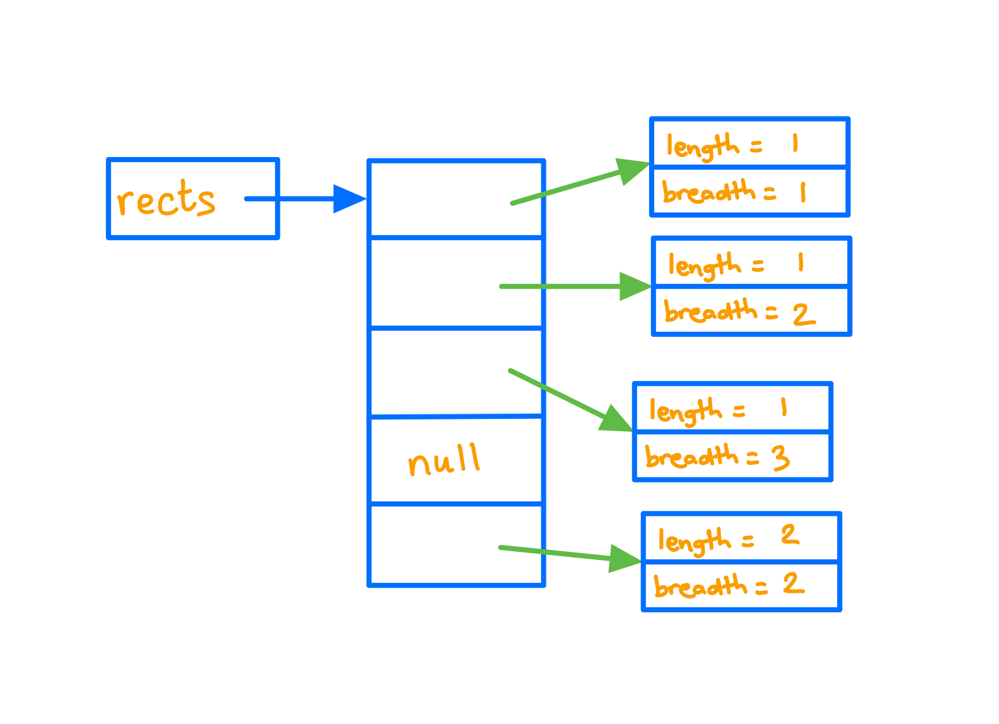

Lists
Assumed Knowledge
Learning Outcomes
- Understand the underlying features of lists and how they differ from arrays.
- Be able to use built-in Java lists
- Be able to build a custom list class
- Understand the time costs of various list operations
Author: Gaurav Gupta
What are lists?
Lists are data structures, much like arrays. The differences being,
1. Lists must hold objects
Arrays can hold a collection of primitive data types or a collection of objects, while lists can hold a collection of objects, not primitive data types.
2. Lists grow as required
The size of array needs to be specified at the time of creating an array. The size of a list need not be specified. You can add as many items as you want to a list (permitting system memory).
3. Lists have a range of instance methods
With arrays (assuming array name is arr), the only operators you have to work with are arr.length and arr[i]. Anything and everything you need to do must be done using these two operators. Several life-saving methods are applicable on list objects, such as:
get(int)//similar to arr[i]size()//similar to arr.lengthadd(Object)//add item at the end of the list
Why are arrays not good enough?
Example - copying over a subset
Consider an array src holding 100 integers. Some negative, some positive.
We need to copy all negative items over to a new array dest.
As an example, if
src is {10, 20, 50, 0, -40, 30, 90, 60, -10, -50, 80}
dest should be {-40, -10, -50}
In order to do this, we need to,
- Count the number of required (negative) values in the array
src - Create an array
destof that size - Copy items over to
dest.
Step 1
int count = 0;
for(int i=0; i < src.length; i++) {
if(src[i] < 0) {
count++;
}
}
Step 2
int[] dest = new int[count];
Step 3
We are copying,
src[4] into dest[0]
src[8] into dest[1]
src[9] into dest[2]
So, in addition to the current index of src, we also need to keep track of the current index of dest into which the item must be copied.
int idx = 0; //index where item must be copied
for(int i=0; i < src.length; i++) {
if(src[i] < 0) {
dest[idx] = src[i]; //another item copied
idx++; //move destination index forward
}
}
Final solution
int count = 0;
for(int i=0; i < src.length; i++) {
if(src[i] < 0) {
count++;
}
}
int[] dest = new int[count];
int idx = 0; //index where item must be copied
for(int i=0; i < src.length; i++) {
if(src[i] < 0) {
dest[idx] = src[i]; //another item copied
idx++; //move destination index forward
}
}
Solution using List (just focus on how easy and intuitive it is)
A solution to the same problem when src and dest are lists instead of arrays is,
ArrayList<Integer> dest = new ArrayList<Integer>();
for(int item: src) {
if(item < 0) {
dest.add(item);
}
}
Creating an ArrayList object
The syntax to create an ArrayList object is:
ArrayList<Object> name = new ArrayList<Object>();
Some examples:
ArrayList<Integer> list1 = new ArrayList<Integer>(); //list of integers
ArrayList<String> list2 = new ArrayList<String>(); //list of String objects
ArrayList<Rectangle> list3 = new ArrayList<Rectangle>(); //list of our beloved user-defined Rectangle objects
List of selected methods in ArrayList class
| Method | Description |
|---|---|
| int size() | It is used to return the number of elements present in the list. |
| E get(int index) | It is used to fetch the element from the particular position of the list. |
| boolean add(E e) | It is used to append the specified element at the end of a list. |
| void add(int index, E element) | It is used to insert the specified element at the specified position in a list. |
| void clear() | It is used to remove all of the elements from this list. |
| boolean isEmpty() | It returns true if the list is empty, otherwise false. |
| int indexOf(Object o) | It is used to return the index in this list of the first occurrence of the specified element, or -1 if the List does not contain this element. |
| int lastIndexOf(Object o) | It is used to return the index in this list of the last occurrence of the specified element, or -1 if the list does not contain this element. |
| boolean contains(Object o) | It returns true if the list contains the specified element |
| E remove(int index) | It is used to remove the element present at the specified position in the list. |
| boolean remove(Object o) | It is used to remove the first occurrence of the specified element. |
| E set(int index, E element) | It is used to replace the specified element in the list, present at the specified position. |
Use of methods in examples
These examples assume the existence of the following Rectangle class:
class Rectangle {
public int length, breadth;
public Rectangle(int len, int bre) {
length = len;
breadth = bre;
}
public String toString() {
return length + " by " + breadth;
}
public int area() {
return length * breadth;
}
public boolean isSquare() {
return length == breadth;
}
}
Each example builds on top of the previous example.
Example 1 - size() and add(Object)
ArrayList<Integer> data = new ArrayList<Integer>();
int a = data.size(); //a will be 0 since data doesn't contain any items
data.add(10); //data becomes [10]
data.add(70); //data becomes [10, 70]
data.add(20); //data becomes [10, 70, 20]
data.add(90); //data becomes [10, 70, 20, 90]
int b = data.size(); //b will be 4
Example 2 - add(int, Object)
//note data = [10, 70, 20, 90] already
data.add(0, 50); //data becomes [50, 10, 70, 20, 90]
data.add(data.size(), 40); //data becomes [50, 10, 70, 20, 90, 40]
data.add(-1, 100); //INVALID - throws IndexOutOfBoundsException
data.add(data.size()+1, 100); //INVALID - throws IndexOutOfBoundsException
Example 3 - set(int, Object)
//note data = [50, 10, 70, 20, 90, 40] already
data.set(0, 60); //data becomes [60, 10, 70, 20, 90, 40]
data.set(data.size()-1, 60); //data becomes [60, 10, 70, 20, 90, 60]
data.set(-1, 100); //INVALID - throws IndexOutOfBoundsException
data.set(data.size(), 100); //INVALID - throws IndexOutOfBoundsException
Example 4 - contains(Object), indexOf(Object), lastIndexOf(Object)
//note data = [60, 10, 70, 20, 90, 60] already
data.
boolean status = data.contains(70); //status is true
boolean status = data.contains(50); //flag is false
int a = data.indexOf(60); //a is 0
int b = data.lastIndexOf(60); //b is 5
int c = data.indexOf(70); //c is 2
int d = data.lastIndexOf(70); //d is 2
int e = data.indexOf(80); //e is -1 (80 not found)
int f = data.lastIndexOf(80); //e is -1 (80 not found)
Example 5 - remove(int), remove(Object)
//note data = [60, 10, 70, 20, 90, 60] already
data.remove(10);
//IndexOutOfBoundsException since 10 is treated as int, and hence remove(int) is called
data.remove((Integer)10); //data = [60, 70, 20, 90, 60]
data.remove((Integer)60); //data = [70, 20, 90, 60]
data.remove((Integer)60); //data = [70, 20, 90]
//removing all occurrences of a specific item -
for(int i=0; i < 5; i++) {
data.add(80);
}
//data = [70, 20, 90, 80, 80, 80, 80, 80]
while(data.contains(80)) {
data.remove(80);
}
//data = [70, 20, 90]
Example 6 - isEmpty(), clear()
//note data = [70, 20, 90[ already
boolean g = data.isEmpty(); //g is false
data.clear(); //data = [] now
boolean h = data.isEmpty(); //h is true
Passing ArrayList to functions
ArrayLists are objects and a reference copy of the actual parameter is made into the formal parameter when they are passed to functions.
import java.util.ArrayList;
public class ListToFunctionClient {
public static void main(String[] args) {
ArrayList<Integer> data = new ArrayList<Integer>();
data.add(10);
data.add(70);
data.add(20);
data.add(90);
int total = sum(data); //total = 190
increment(data); //data = [11, 71, 21, 91]
System.out.println(total+" "+data); //190 [11, 71, 21, 91]
}
public static int sum(ArrayList<Integer> list) {
int result = 0;
for(int i=0; i < list.size(); i++) {
result+=list.get(i);
}
return result;
}
public static void increment(ArrayList<Integer> list) {
for(int i=0; i < list.size(); i++) {
list.set(i, list.get(i)+1);
}
}
}
For-each loop
The for-each loop helps simplify list (or array) traversal where the index is not required besides accessing the item. Syntax:
for(Object obj: ArrayList) {
//use obj
}
Example:
ArrayList<Integer> data = new ArrayList<Integer>();
data.add(10);
data.add(70);
data.add(20);
data.add(90);
int total = 0;
for(Integer item: data) {
total+=item;
}
//total = 190
In the above example, item becomes a reference copy of,
- First item (10) in the first iteration of the loop
- Second item (70) in the second iteration of the loop
- Third item (20) in the third iteration of the loop
- Fourth item (90) in the fourth iteration of the loop
Since java handles casting between Integer and int, you can also write:
for(int item: data) {
total+=item;
}
Here, the value of the Integer object is copied into item during each iteration.
So, are we going to use the Rectangle class at all?
Yes, we will :)
Take the following example -
ArrayList<Rectangle> rects = new ArrayList<Rectangle>();
for(int i=0; i < 5; i++) {
if(i!=3) {
Rectangle temp = new Rectangle(1+i/3, 1+i%3);
rects.add(temp);
}
else {
rects.add(null);
}
}
System.out.println(rects);
At the end of the execution of the above code, the output will be:
[1 by 1, 1 by 2, 1 by 3, null, 2 by 2]
The memory diagram is provided below:
